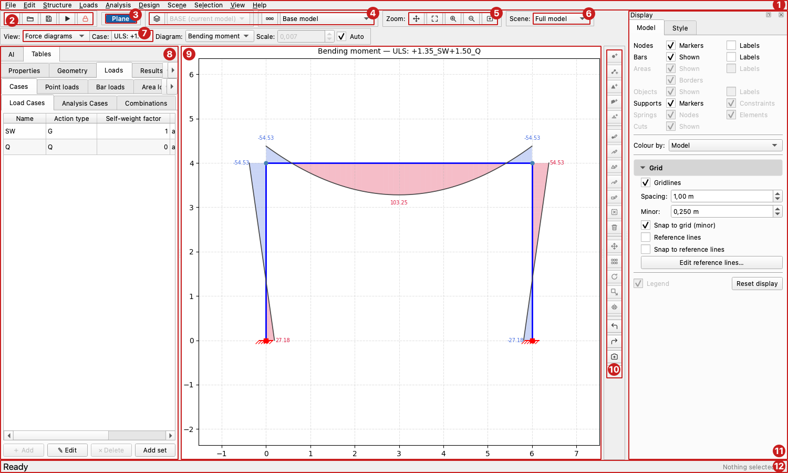

The Interface¶
This is the main window, with a portal frame open (the one built in Getting Started), its bending moments drawn, and its parts numbered:

| Part | What it is | |
|---|---|---|
| 1 | Menu bar | every command of the program: Menus |
| 2 | File | New, Open, Save, Run analysis (F5), and Lock (Ctrl+L) |
| 3 | Domain badge | Plane (blue) or Plate (green): what kind of model this is. See Domains |
| 4 | Variants and Sequences | the buttons that open their panels, and the selectors of the variant and of the phase to show |
| 5 | Zoom | pan, zoom to a window, zoom in, zoom out, fit |
| 6 | Scene | the working subset of the model to show: Scenes |
| 7 | View and case | what the canvas draws, and the case or combination it draws it for |
| 8 | Left panel | the AI panel and the Tables of the model: The left panel |
| 9 | Canvas | the drawing of the model, where you pick and edit |
| 10 | Canvas tool bar | the tools to add, edit and transform, and to undo |
| 11 | Display panel | what is drawn, and how: Display panel |
| 12 | Status bar | the last message, and how many items are selected |
The tool bars¶
Across the top, from the left:
| Group | Contents |
|---|---|
| File | New, Open, Save, Run analysis, Lock / Unlock |
| Domain badge | the kind of model. Click it while the model is empty to change it (Domains) |
| Variants | a button that opens the Variants panel, and the selector of the model to show (the base model, or a variant) |
| Sequences | a button that opens the Construction Sequences panel, and the selector of the phase to show |
| Zoom | Pan, Zoom window, Zoom in, Zoom out, Fit to structure |
| Scene | the selector of the scene |
The second row is the View selector, which lists only the modes that have something to draw for the model, so entries come and go as you analyse and design. After an analysis the Case selector appears beside it, then the controls the view needs: the Diagram (bending moment, shear force, axial force or torsion) and the Scale of the force diagrams, the phase of a construction sequence, and Cumulative Δu for its displacements. What each view shows is on Results.
The tool bar of the canvas, vertical, beside the canvas, in four groups:
| Group | Contents |
|---|---|
| Add | Add node, Add bar, Add triangle, Add quad, Add support. Each is a mode: click it, then click on the canvas (Esc leaves the mode) |
| Edit / Delete | edit the selected nodes, bars, area elements, lines or areas; clear the selection; delete it |
| Transform | Move, Array, Rotate, Scale, Mirror, on the selection, the scene or the whole model |
| History | Undo, Redo, Save snapshot, Manage snapshots |
The groups of this tool bar, Scene, Variants and Sequences can be shown or hidden from View ▸ Toolbar… or in Preferences. The groups of the top row that matter most (File, Zoom, View and case) are always there.
History and snapshots¶
The History group has Undo and Redo, and two snapshot buttons:
- Save snapshot asks for a name and stores the model (without results) with the date and time.
- Manage snapshots lists them, with Restore, Rename… and Delete (double-click restores).
A snapshot never changes: to keep later edits, save another one. Restoring asks
first, discards the results and can be undone with Undo. Snapshots are saved in
the .x2d file and come back when it is opened (.json files do not keep them),
and creating, renaming or deleting one marks the model as modified. New, Open,
Import and New from Template start with the snapshots of the file, or none.
The left panel¶
The panel at the left of the window is a stack of tabs. It starts with two, AI and Tables, and the commands that need more room open more tabs beside them, as the rest of this section describes. It opens on AI; press Tables to see the model. Hide or show the whole panel with View ▸ Tables panel (F9) and View ▸ AI panel (F10). The result tables are not in this panel: they have a window of their own.
AI¶
AI has two tabs of its own, the Assistant and the Agent. Both are optional: nothing is turned on until you send a message.
Tables¶
Tables holds the tables of the model: where you add, edit and delete what it is made of. It has four tabs, and most have sub-tabs, down to three levels. The tables of the results are in the Results window:
- Properties
- Project
- Materials
- Bar sections
- Panel sections
- Geometry
- Nodes
- Bars
- Panels
- Objects
- Segments
- Arcs
- Multisegments
- Rectangles
- Polygons
- Supports
- Springs
- Node Springs
- Element Springs
- Constraints
- Loads
- Cases
- Load Cases
- Analysis Cases
- Combinations
- Point loads
- Point Loads
- Settlements
- Bar loads
- Dist. Loads
- Elem. Point Loads
- Temperature
- Line loads
- Line temp.
- Area loads
- Temperature (areas)
- Edge loads
- Pressure
- Object temp.
- Cases
- Model
- Cuts
- Fields
- Properties: the project information, the materials, and the sections of bars and of areas.
- Geometry: the nodes, the bars, the area elements (triangles and quads), the geometry objects (one table for each kind), the supports, the springs (of nodes and of elements) and the constraints.
- Loads: the cases (load cases, analysis cases, combinations), then the loads by what they act on: point loads (and settlements), bar loads, area loads. The same loads are in the Loads menu.
- Model: the section cuts you have defined and the fields.
Results window¶
The tables of the results are for reading, with many columns and many rows, so they are in a window of their own, not in the left panel. Open it with View ▸ Results (F8); it is not modal, so the canvas keeps working while it is open, and it can go beside the canvas or on another screen. Closing it hides it, and it comes back where it was. It has three tabs (Results tables, Cuts and Design tables), plus the reports you open from its Reports menu:
- Results tables
- Displacements
- Reactions
- Constraint forces
- Element forces
- Panel stresses
- Modal
- Span extremes
- Reaction sums
- Info
- Cuts
- Design tables
- Concrete
- Reinforcement
- Shell reinf.
- Crack width
- Columns
- Beam bars
- Suggested rebar
- Punching
- Steel
- Timber
- Concrete
- Results tables: the tables of the analysis: displacements, reactions, forces of the constraints, forces of the elements, stresses of the panels, modal results, the extremes along each span, the sums of the reactions, and an Info page. See Results.
- Cuts: the resultant of the forces across a section cut. Pick the Cut, the Case and the Plot field; Add… and Manage… cuts; the table of Bars, Areas and Total; a plot along the cut; and CSV (this case), CSV (all cases) and Graphics. Analysis ▸ Cuts ▸ Results… brings it to the front. The tab is greyed out while the model has no cuts. It only reads the results, so it works on a locked model.
- Design tables: the results of the designs. Concrete has a tab for each of its designs: the reinforcement of the bars, the shell reinforcement of walls and slabs, the crack width, the columns, the beam bars, the suggested column reinforcement and the punching; Steel and Timber have one table each. Running a design from the Design menu fills its table. See Design.
The window has a Reports menu with the commands that write a document from the results: Results report… (the same as File ▸ Results Report…: a tab where you choose the format and the content, then Export…; it closes with the × of its tab) and Tables to Excel… (as in the File menu). The Design report (Design ▸ Design report…) is not here: it is a tab of the left panel, beside the canvas, because you compose its list from the canvas selection. It composes the step-by-step calculation of the design checks, from the materials (which designs), Summary tables, Overview diagrams, the scope, the detail and the combinations, with Preview and Export… in the format you choose; see Design reports. It only reads the results, so it also works on a locked model.
The names follow the domain: a bar is a Beam in a plane model and a Grid member in a plate model, an area is a Panel or a Slab. (The list above is written from the application, for a plane model.)
The panels that open when a command asks for them¶
Some commands open a panel of their own in the left panel, as one more tab beside AI and Tables. The tab opens in front, and reopening the command brings it back; it closes with its own Close button, which returns you to Tables. Several can be open at once. They are panels, not windows: the canvas stays in view, so you can pick things on it.
| Tab | Opened by | What it is for | What is in it |
|---|---|---|---|
| Support sets | Analysis ▸ Construction Sequences… (opens with Sequences) | named sets of restraints, for the provisional supports of construction phases (Add and Rename use the name as the set's id) | the list of sets (Add, Rename, Delete) and, for the selected one, its Name and the nodes it changes (a node not listed keeps the base's support; none ticked is no support), with Show (select them on the canvas), Add node (click one on the canvas), Remove node, Load from selection and Apply to all; in three sub-tabs: Nodes (the table of the nodes it changes), Springs (node springs and element (Winkler) springs) and Edges (the edges of an area object: tick the object, then the degrees of freedom of each edge) |
| Variants | Analysis ▸ Variants… | parallel what-if scenarios of the model | the list of variants (New, Rename, Delete), its description, its Supports against the base (Reset to base, Copy from…), All elements or the Active elements (Use selection, Remove selection), Seed from the base model, and Sync with base, Save variant, Export as .x2d… and Variant combinations… |
| Sequences | Analysis ▸ Construction Sequences… | construction sequences, phase by phase | the list of sequences, the construction stages (Stage, Assign to the selected elements, View all stages) and the table of phases (number, time in days, name), with Add…, Edit…, Remove, Duplicate, Up, Down and Save sequence |
| Beams | Design ▸ Beam definitions | which bars form one continuous concrete beam | the table of bars (element, length, span, beam, section, status); Replace list with selection, Add selection to list, List defined beams; Assign to beam, Rename, Remove from beam; Detect beams automatically…; and Open detailing window… |
| Timber beams | Design ▸ Special timber beams | pitched, tapered and curved timber beams | the same panel in timber mode, with the parameters of the beam: lateral-restraint spacing, lamination thickness, inner radius, type, inclined edge, depth change, the apex reinforcement (bonded-on plane, or screws and rods), and Apply to beam |
| Buckling | Design ▸ Buckling lengths… | the buckling-length factors of steel, timber and column members | the table of members with their lengths, K_y, K_z, K_LT, LTB and column flag, and the buttons to apply, reset and load them |
| Punching | Design ▸ Punching… (plate models) | the columns of a slab, for the punching check | the list of columns (Add…, Edit…, Delete), Calculate, Draw the control perimeters, Clear, and Show columns on canvas |
Two things change how the program lets you work:
- While Variants or Sequences is open, the model is locked for editing, so that nothing changes under the panel, and the variant selector goes back to the base model. Closing the last of them unlocks it.
- Beams, Timber beams and Buckling edit design-only data, which does not change the analysis, so they work on a locked model and keep the results; run the design again to apply what you set.
The Beam bars detailing… command, and the Open detailing window… button of the Beams panel, open the detailing of the bars of each beam in a window of its own, not a panel: see Concrete: beams and columns. What each panel does in detail is on the page of its subject: Variants & construction sequences, Design, Buckling lengths, Concrete: punching and Design reports.
The canvas¶
| Action | Control |
|---|---|
| Select | Left-click an item, or drag a selection rectangle. Dragging to the right selects what the rectangle encloses, to the left what it crosses |
| Edit an item | Double-click it (a node, a bar, an area, an object) |
| Commands for an item | Right-click it: a menu with the commands for that kind of item (edit, divide, select what it is made of, …) |
| Zoom (anchored at cursor) | Mouse wheel |
| Pan | The Pan button, then drag; or hold the middle button (wheel) and drag |
| Zoom to a window | The Zoom window button, then drag a rectangle |
| Zoom in / out / fit | The buttons of the Zoom group, or = / - / 0 |
| Leave an add mode | Esc |
The selection count is on the right of the status bar. With the keyboard, Selection ▸ Find entity… (Ctrl+F) selects an item by its name. The Selection menu has the rest: select by a property, the previous selection, invert, edit and divide.
Display panel¶
A dockable Display panel (toggle with View → Display panel) has two tabs.
Model — what is drawn in the scene, in one row per kind of entity: Nodes (markers, labels), Bars (shown, labels), Areas (shown, labels, borders), Objects (shown, labels), Supports (markers, constraints), Springs (nodes, elements) and Cuts; hover a box for its full name. The title of a row is faded only when the model has nothing of that kind. In the deformed and modal views an Undeformed structure toggle draws the reference geometry behind the deformed shape. When the model has geometry objects, the Structure view gains a Mesh checkbox that overlays the finite-element mesh generated from those objects (visual only — picking stays on the objects). Below the layers:
- Colour by — Model (one colour), Sections or Materials. Bars, areas
(triangles and quads) and geometry objects take the colour of their section or
material — the surface of a rectangle or polygon object is filled like an area
element (and its mesh, when shown, lies over that fill), not only outlined; where a
result field colours the areas (stresses, shell reinforcement), the field wins. A colour stays with its section for as long as the section is in
the model, so adding or removing another one does not change it; with more than 15
in use the colours repeat. The key is drawn on the canvas, lower right (the
support key is upper right), so it is part of any image exported from it, and the
Legend checkbox hides it; past 12 entries it says +N more. The list under
the box shows every section or material in use — a section with its size
(
S1 · 0.30×0.50, a catalogue profile, ort=0.20for an area) — with how many items use it; click an entry to select them on the canvas (Ctrl or Shift for several). - Grid — a section that opens and closes: gridlines, spacing, minor (snap) spacing, snap to grid, and the reference lines with their snap.
- Legend and Reset display, which turns the layers back to their defaults.
Style — live, session-only styling of the active view, in two sections:
- Colour maps — the colour map of the active view's field. Stresses/forces, shell reinforcement, plate displacements, scalar fields and pressure / temperature loads each keep their own colour map, chosen from one curated, science-friendly list (perceptually-uniform, diverging and sequential palettes, each shown with a preview swatch; no rainbow maps). Also here: continuous vs. discrete (banded) fill, number of levels, contour lines, nodal smoothing, and a manual colour-scale range. The section is enabled only in views that actually draw a colour-mapped field.
- Diagrams — styling for the bar views. For force diagrams (M/V/N): positive / negative colours, fill opacity, line width, filled band vs. outline, and value labels. For utilisation-ratio colouring (steel / timber design): the colour scheme (traffic-light green→red, or any colour map), the pass/fail threshold, the over-limit colour and the bar width. Each sub-panel is enabled only for the view it applies to.
At the bottom, Save style… / Load style… / Set as default export or import
the whole visualization style (colour maps, diagram and ratio styling, and the
colour registry) as a portable .json preset, or persist the current style as
the startup default. Ready-made presets (publication, presentation,
colorblind-safe, grayscale, high-contrast, blueprint) come with the application.
Changes made in the Style tab apply only for the current session; the persistent defaults live in Preferences ▸ Display (and Set as default writes the current style there).
Menus¶
The list below is written from the application itself, so it has every item of every menu, with its shortcut. A name followed by ▸ (…) is a submenu, and a name in italics with a
colon is a heading inside a menu.
- File — New Ctrl+N · New from Template… Ctrl+T · Open… Ctrl+O · Open recent · Import… · Merge model… · Save Ctrl+S · Save As… Ctrl+Shift+S · Export… · Export Python… · Script editor… Ctrl+Shift+E · Results Report… Ctrl+Shift+W · Tables to Excel… Ctrl+Shift+T · Print Graphics… Ctrl+E · Preferences… Ctrl+, · Exit
- Edit — Undo Ctrl+Z · Redo Ctrl+Y · Cut Ctrl+X · Copy Ctrl+C · Paste Ctrl+V · Delete Del · Move… · Array… · Rotate… · Scale… · Mirror… · Line to bar · Surface to mesh · Select all Ctrl+A
- Structure — Project Info… · Materials… Ctrl+M · Sections ▸ (Bar sections… Ctrl+Shift+M · Panel sections…) · Spectral Functions… · Fields… · Nodes ▸ (Add node · Add support · Add constraint · Manage Nodes… Alt+Shift+N · Node springs ▸ (Manage… · Add…) · Check Coincident Nodes… · Merge Coincident Nodes… · Select Orphan Nodes) · Bars ▸ (Add bar · Manage bars… Alt+Shift+E · Bar springs ▸ (Manage… · Add…)) · Panels ▸ (Add triangle · Add quad · Manage area elements…) · Objects ▸ (Add segment… · Add arc… · Add multisegment… · Add rectangle… · Add polygon… · Manage objects…) · Supports ▸ (Add support · Manage supports… Alt+Shift+S) · Constraints ▸ (Add constraint · Manage constraints…) · Model check… · Remove invalid references…
- Loads — Load Cases… Alt+Shift+L · Add Loads Set… · Point loads ▸ (Manage… Alt+Shift+P · Add…) · Distributed loads ▸ (Manage… Alt+Shift+D · Add…) · Area pressure ▸ (Manage… · Add…) · Edge loads ▸ (Manage… · Add…) · Settlements ▸ (Manage… · Add…) · Bar temperature ▸ (Manage… · Add…) · Area temperature ▸ (Manage… · Add…)
- Analysis — Analysis Cases… Ctrl+Shift+A · Load Combinations… Alt+Shift+C · Auto Comb. (EN1990)… Ctrl+Shift+C · Cuts ▸ (Add cut… · Manage cuts… · Results…) · Generate mesh F6 · Model info… · Model check… · Run F5 · Lock Ctrl+L · Variants… · Construction Sequences…
- Design — Code preferences · Design combinations · General: · Buckling lengths… · Design report… · Concrete: · Concrete members (ULS) · Crack width · Suggest column reinforcement (ULS) · Beam definitions · Beam bars detailing… · Concrete areas (ULS) · Punching… · Steel: · Steel members (ULS) · Timber: · Timber members (ULS) · Special timber beams
- Scene — Full model · New scene from selection… · Rename scene… · Delete scene · Add selection to scene · Remove selection from scene · Update scene to selection
- Selection — Select all · Select by… · Find entity… Ctrl+F · Previous selection · Invert selection · Clear selection · Edit selected nodes… · Edit selected bars… · Edit selected area elements… · Edit selected lines… · Edit selected surfaces… · Divide bars… · Divide triangles… · Divide quads… · Delete selection
- View — View mode ▸ (Structure Ctrl+1 · Loads Ctrl+2 · Fields · Modal shapes Ctrl+3 · Deformed shape Ctrl+4 · Displacements · Reactions Ctrl+5 · Constraint forces · Force diagrams Ctrl+6 · Stresses · Reinforcement (As) Ctrl+9 · Shear reinf. (Asw) · Shell reinf. (As) · Crack width (wk) · Steel design · Timber design · Column design) · Theme ▸ (Follow system · Light · Dark) · Display panel · Tables panel F9 · Results F8 · AI panel F10 · Agent tab · Toolbar… ▸ (Add · Edit / Delete · Transform · History (Undo/Redo) · Scene · Variants · Sequences) · Navigate to… ▸ (Supports Alt+1 · Springs Alt+2 · Materials Alt+3 · Sections Alt+4 · Loads Alt+5 · Combinations Alt+6 · Analysis Cases Alt+7)
- Help — Documentation F1 · Keyboard Shortcuts · License Agreement · Third-party Notices · Expiration Date · About
Where to look for what:
- Making the model: Structure (materials, sections, geometry, supports, constraints) and Loads. Both open the table of what they manage; Add… creates one, Manage… lists them.
- Running it: Analysis. Design is next to it, and Scene, Selection and View are about what you see and select.
- Reaching a table quickly: View ▸ Navigate to… (Alt+1 … Alt+7) opens Supports, Springs, Materials, Sections, Loads, Combinations and Analysis cases.
- The same commands, from words: the Assistant and the Agent can do most of what the menus do.
Preferences¶
File → Preferences is organised in tabs: General, Display, Design, Colors, AI Assistant and Dependencies.
The General tab holds the theme, the default file location, the coincident-node tolerance, the default grid spacing and snap, and whether to open the last model at startup. View options says what is shown when the application starts: the Panels (Tables, AI, Display) and the Tool bars (Add, Edit / Delete, Transform, Scene, Variants, Sequences). It also lists the last used model and the recent models, with buttons to clear the list or drop the files that no longer exist.
The Colors tab sets the colour of each kind of entity in the drawing. The Display tab holds the display sizing defaults (text, marker and line sizes)
and the persistent style defaults — the colour map for each field, the default
number of levels, continuous vs. banded fill, smoothing, and the bar-diagram and
utilisation-ratio styling. The Design tab holds the default design code per
material (concrete, steel, timber), whose options come from the same registry as
Design → Code preferences; a code stored inside an opened .x2d takes
precedence over this default.
Preferences, this session, and what the application remembers¶
Three different things are kept apart:
- Preferences (
~/.xdfem2d/preferences.json) are what a launch starts with. They change only in the Preferences dialog: OK saves them, Cancel changes nothing. The one other way is the explicit Set as default of the Style tab. - This session. Whatever you change while the application runs — View ▸ Theme, the panel and tool-bar toggles of the View menu, the assistant's temperature, Think, Task and model in the Assistant tab, the tolerance asked for when you merge coincident nodes — lasts until you close the application and is not saved. When you change the same setting in the Preferences dialog and press OK, that choice replaces the session's; the settings you did not touch keep the value you chose in the session. To make a toggle permanent, set it in Preferences.
- What the application remembers (
~/.xdfem2d/state.json) is not a choice of yours: the recent files and the last folder, the acceptance of the liability notice, the licence cache, the first-run check for the optional tools, and the assistant warnings you switched off with Don't show this again (Preferences ▸ AI Assistant ▸ Show the assistant's warnings again brings them back). The application writes it when it needs to.
Older versions kept all of this in preferences.json; the first launch of a newer
one moves the remembered part to state.json and leaves the preferences alone.
The folder also has config.ini, a file of advanced settings for the AI features (every line is commented out and the defaults apply until you change one; an environment variable of the
same name wins over it). The rest of the folder is the Assistant's history and caches.